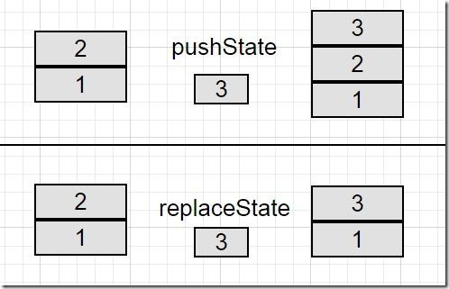

浏览器支持
在写这篇文章的时候，各主流浏览器对History API的支持是非常不错的，可以点击此处查看其支持情况，这个链接会告诉你支持的浏览器，并使用之前，总有良好的实践来检测支持的特定功能。
为了用变成方式确定浏览器是否支持这个API，可以用下面的一行代码检验：
return !!(window.history && history.pushState);
此外,我建议参考一下这篇文章:Detect Support for Various HTML5 Features.
如果你是用的现代浏览器，可以用下面的代码：
if (Modernizr.history) {
// History API Supported
}
如果你的浏览器不支持History API，可以使用history.js代替。
使用History
HTML 5提供了两个新方法：
1、 history.pushState();
2、 history.replaceState();
两种方法都允许我们添加和更新历史记录，它们的工作原理相同并且可以添加数量相同的参数。除了方法之外，还有popstate事件。在后文中将介绍怎么使用和什么时候使用popstate事件。
pushState()和replaceState()参数一样，参数说明如下：
1、 state：存储JSON字符串，可以用在popstate事件中。
2、 title：现在大多数浏览器不支持或者忽略这个参数，最好用null代替
3、 url：任意有效的URL，用于更新浏览器的地址栏，并不在乎URL是否已经存在地址列表中。更重要的是，它不会重新加载页面。
两个方法的主要区别就是：pushState()是在history栈中添加一个新的条目，replaceState()是替换当前的记录值。如果你还对这个有迷惑，就用一些示例来证明这个区别。
假设我们有两个栈块，一个标记为1,另一个标记为2，你有第三个栈块，标记为3。当执行pushState()时，栈块3将被添加到已经存在的栈中，因此，栈就有3个块栈了。
同样的假设情景下，当执行replaceState()时，将在块2的堆栈和放置块3。所以history的记录条数不变，也就是说，pushState()会让history的数量加1.
比较结果如下图：

到此，为了控制浏览器的历史记录，我们忽略了pushState()和replaceState()的事件。但是假设浏览器统计了许多的不良记录，用户可能会被重定向到这些页面，或许也不会。在这种情况下，当用户使用浏览器的前进和后退导航按钮时就会产生意外的问题。
尽管当我们使用pushState()和replaceState()进行处理时，期待popstate事件被触发。但实际上，情况并不是这样。相反，当你浏览会话历史记录时，不管你是点击前进或者后退按钮，还是使用history.go和history.back方法，popstate都会被触发。
In WebKit browsers, a popstate event would be triggered after document’s onload event, but Firefox and IE do not have this behavior.（在WebKit浏览器中，popstate事件在document的onload事件后触发，Firefox和IE没有这种行为）。